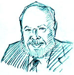

This is an archived copy of History Matters, provided by the Roy Rosenzweig Center for History and New Media. To explore this content in a new interface, visit Who Built America?.


Orville Vernon Burton is Professor of History and Sociology at the University of Illinois, Urbana-Champaign (UIUC). He is also a Senior Research Scientist at the National Center for Supercomputing Applications where he heads the initiative for Humanities and Social Science projects. His major areas of research are race relations, family, community, and religion. His work has appeared in more than a hundred articles in a variety of journals. He is the author or editor of six books (one of which is on CD-ROM), including In My Father’s House Are Many Mansions: Family and Community in Edgefield, South Carolina (1985). He is the current President of the Agricultural History Society. Recognized with teaching awards at the departmental, school, college, and campus levels, he was designated one of the first three UIUC University “Distinguished Teacher/Scholars” in 1999. He was also selected nationwide as the 1999 U.S. Research and Doctoral University Professor of the Year (presented by the Carnegie Foundation and by CASE). In the 2000–2001 academic year, he was named a Carnegie Scholar as well as Mark Clark Distinguished Visiting Professor of History at the Citadel.
1. What drew you to history teaching?
I grew up and attended school in the rural cotton mill town of Ninety Six, South Carolina. The high school history teacher was our football coach, and those of us on the team sometimes went to the gym or had team meetings instead of attending class. We did have a very good football team and won the state championship, but I learned very little about history in high school. I did read a lot, including all the history and biographies in the bookmobile that visited every other week. Also, as I rolled newspapers for my paper route each morning, I read three different papers with totally contrasting political views, which was intriguing to me.
Ninety Six is a very old colonial town surrounded by reminders of history. Today, it calls itself the “garden spot of history.” Like many people, I learned my history from the memorials that surrounded me—the old house that someone pointed out as historical, the Revolutionary battlefield that was about three miles outside of town, and local historical markers. One marker celebrated native son and U.S. Congressman Preston Brooks and his brutal caning of Massachusetts abolitionist Senator Charles Sumner in the Senate Chamber. In Brooks’s own words: “I struck him with my cane and gave him about thirty first rate stripes with a gutta percha cane. . . . Every lick went where I intended. . . . Towards the end he bellowed like a calf. I wore my cane out completely.” The New York Times reported in 1856 that Ninety Six honored Brooks with the largest gathering ever in the upcountry. Thousands of canes were presented to Brooks to replace the one he had destroyed while beating Sumner. Sad to say, but Sumner’s caning was what I saw celebrated as history.
As a youngster in Ninety Six, I liked all the people, and all people were so good to me, so I could not figure out the negative attitudes towards others in the community. As a religious child, I was perplexed about the animosity of some whites towards African-Americans, especially in the years after Brown v. Board of Education. I wondered why the white people in my church who were so good to me, could have such strong negative feelings about African-Americans. Why would they not want them to attend our church? That “why” question led me into thinking about the history of race relations.
Thus, as a young man growing up in the South during the Civil Rights Movement and the Vietnam War, I was witness to the abuses of history, a history that justified exploitation and racism. I realized then that history should explain the past, not glorify it. I came to believe that history is a way of life, a way of making sense of the world and of oneself. But that was not until much later.
2. You talk about your deep affection for your hometown but also your deep criticism for the version of the past that you learned there. Did that realization that you were witnessing “abuses of the past” come suddenly or as a gradual process?
That view came gradually, but fairly early. I also learned much about the complexity of history by growing up in a bi-racial rural, cotton mill area. We had triple segregation in the early years, African-Americans in one school, white rural and town kids in my school, and kids whose parents worked in the mill went to the mill school for elementary grades. So there was an early recognition of class and caste along with race.
Something very important to me was my friendship with Charles Willis Williams; our homes were near each other’s, only across the cow pasture, and he and I were pretty much inseparable. Like everyone in his family, I called him “brother.” I was pretty naïve; it took me a long time to know why some whites teased me about my “black brother.” So I learned rather early on from African-American friends that there were other versions of history, another view of my hometown community, and a different understanding of people’s motivations.
3. Did your historical views change in college?
I had wonderful history professors at Furman University. At first I was pretty quiet, because I talked “country” and dressed rather unstylishly. Even in 1965 Furman was the best school in South Carolina, and most of the students were from upper middle-class families with a few poorer students who might be heading for the ministry. One day, Dr. Winston Babb, a wonderful professor and human being, was talking in history class about how when he first came to Furman everyone knew what a “lint head” was, but that for the last fifteen years not one student had any idea of what the term referred to. For some reason, I spoke up and told him I knew, and that I had worked in a cotton mill. From that day forward Dr. Babb “adopted” me. I suppose I became a history major because of his personal interest in me. And the personal caring about students that the Furman faculty exhibited certainly influenced me.
I suspect it was mainly Dr. Babb’s doing, though I do not know for certain, that I was selected for the Ford Carnegie Harvard-Yale-Columbia Intensive Summer Studies Program (ISSP). It was a wonderful program that was designed for minority students. There were about five or six non-African-American participants out of a total of probably one hundred students. In 1967 at Columbia University I took the Great Books “Contemporary Civilization” course that was set up for us in the program, and I had to take another “regular” summer course being offered. Someone placed me in a graduate lecture course on the Old South. They assumed, I suppose, that since I was from the South, that I should be ok in this graduate-level course, but I had never had any American History. Visiting Professor Eugene Genovese from Rutgers, celebrated at the time for his opposition to the Vietnam war, had just published a book, The Political Economy of the Old South, that electrified the profession. He was an extraordinary lecturer, weaving a remarkable web of ideas, and, if you bought into the tenets of his argument, you were hooked.
What I remember about the course (in addition to wondering why Gene and I were the only two males not wearing a beanie—never having seen a yarmulke before) is the paper we had to write on W.J. Cash, Mind of the South. I was so angry with Cash’s depiction of mill workers that instead of the four-page required paper, I wrote about thirty pages about how great the folks working in the cotton mill were and how Cash was wrong. Gene did not like the paper. He just wanted us to say that other areas besides the South had a frontier. He had no idea where I was from, and he assumed I was being presumptuous about my knowledge of the South. Gene got me very interested in southern history. Interestingly, while Gene was a masterful teacher, I later elected a very different style from his. I prefer to present students with multiple interpretations in addition to mine, very different from Gene’s effective way of presenting a tight argument.
The following summer at Yale University I had a class with Bill McFeely and Joe Ellis. We read C. Vann Woodward’s Tom Watson: Agrarian Rebel. That book showed me that history could make a difference, and that is when I considered becoming a historian. Because of Woodward, I began to see that one could use history to help people understand, and a new understanding can change the world, especially in terms of race relations.
In college I became active in the Civil Rights Movement and voter registration. In February 1968, the South Carolina Highway patrol killed three African-American students and wounded twenty-seven others who were protesting a segregated bowling alley in Orangeburg. This Orangeburg Massacre and the way the state officials tried to explain it away in the papers had an influence on me; I again realized how powerful the truth is and how important it is who wrote and taught history. I remember at a sit-in at the attorney general’s office, questioning the spin that the state was putting on what happened.
My senior year at Furman University, Dr. Benjamin E. Mays spoke during Religious Emphasis week. I had known a great deal about Preston Brooks from Ninety Six, but I had never learned that Ninety Six is also the home of Benjamin E. Mays, the long time president of Morehouse College, the spiritual mentor of the Reverend Martin Luther King, Jr., and the godfather of the modern Civil Rights Movement. No memorial markers commemorated this apostle of peace whose very life represented a heroic struggle for dignity and for civil rights. Getting to know Dr. Mays, learning that he often visited our same hometown, and that whites were unaware of who he was also influenced me about wanting to become a teacher and a historian. (There is now a memorial to Dr. Mays in Ninety Six.)
The wonderful professors I had at Furman encouraged me to go on to graduate school. Because of the Harvard-Yale-Columbia ISSP, I was also recruited for graduate school, and I elected to go to Princeton. There I encountered other really great teachers and role models.
I am still learning and changing my historical views of teaching. This last year has been terrific for me as a Carnegie Scholar. Through that program I have begun to explore the scholarship of teaching and learning in a systematic way. I was introduced to the work of Sam Wineburg, who studies how historians and students learn history. I have been trying to use some of what I have learned in my own teaching.
4. You have mentioned a number of positive and negative role models of history teaching that you have encountered from your high school days through graduate school. Which teachers do you think most influenced the kind of teacher you have become?
My Furman teachers influenced me because of how much they cared for students. They reached out to me and made me work hard to learn and to make up for my background. I will always treasure those relationships with my professors at Furman. I appreciated Bill McFeely’s passion for history and Joe Ellis’s encouragement. At Princeton, Sheldon Hackney was a role model as someone who is inspired by ideas. I am still using his ideas thirty years later, and they still seem fresh and new. Jim McPherson was a role model in the incredible breadth of his knowledge and his ability to synthesize and explain different interpretations. Both Sheldon and Jim made me feel like a part of the Princeton intellectual community and that made me work even that much harder in graduate school. I have tried to show that sort of respect for my undergraduates (and graduate students), and I believe that they work harder, are willing to read and write more, because they know that I genuinely respect them and their ideas, and that I care about them.
5. When did you start teaching?
I taught at Mercer County Community College while a graduate student at Princeton. I have been teaching at the University of Illinois since 1974. In the summer of 1987, I taught at the Governor’s school for high school students in South Carolina (located at the College of Charleston). But the spring of 2001, when I visited at The Citadel, was the first time I taught full-time outside of Illinois.
6. What courses have you taught?
There are just too many to name, literally dozens of different courses. At the undergraduate level, I have particularly taught courses on Southern history, race, family, Civil Rights, and historical methods as well as the U.S. history survey. For graduate students, I have taught a similar range of courses, particularly Southern history and historical methodology.
7. Which are your favorite courses to teach?
What I really enjoy teaching is the students. But I guess my favorite courses are Southern History, race relations, Civil War and Reconstruction, and the Civil Rights Movement because they deal with race relations, and teaching race relations can make a real difference in someone’s life.
8. Having been at the University of Illinois for more than twenty-five years means you have taught about the history of race and race relations in some fairly different historical moments. How has teaching about race changed over the years?
When I first went to Illinois, we were still in the aftermath of the Civil Rights Movement. My students seemed to believe that the U.S. was tilted so that all the evils rolled down into the South. As I taught race relations over the years, this view has shifted. I still remember in the 1980s when I was teaching a course on race relations and a white student came up to me and said,“Professor Burton, you don’t understand, you are from the South where all races of people are cordial.” She went on to explain in terminology very similar to the old pro-slavery “bestiality” arguments that “‘those people’ in South Side Chicago are like animals.” The South has now become in popular movies and books—a place where race relations are ok. Now it is the inner-city North that has the problem. African-American as well as white students reflect this naïve view.
Perhaps an even more important way that the teaching of race relations has changed is the reflection and awareness of the diversity of America. The increasing Hispanic and Asian-Americans population and the recognition of Native American rights (especially with the University of Illinois’s retention of the “Chief” as their athletic symbol, clearly an insult to Native Americans), have all come to be more important in the teaching of race relations. When I began teaching race relations in 1974, one of the questions we explored was which came first, race or slavery. Of course, this would not have been a question of significance if it did not have ideological implications relevant to our own times and the Civil Rights Movement. If the institution of slavery was a very slow growth and was not complete until the beginning of the eighteenth century, then racial prejudice was not the inherent and automatic reaction of the British and European people when meeting Africans for the first time. The corollary of this line of thinking is that the eradication of racial prejudice would come with the elevation of the economic status of the subjugated group, and prejudice would melt away quickly. It’s a relatively happy view.
On the other hand, if the reaction of the English and Europeans when first meeting Africans was to enslave them, then racial prejudice may be so ingrained in human nature that the truly integrated society that we want is impossible. This sort of dichotomous thinking worked well for students to wrestle with in those years. But as we became more aware of the many sides and forms of racism in our multi-ethnic society, this dichotomy does not ring true. Now we talk about the creation of race and the creation of “whiteness.” The relationship of class and gender to race relations has to occupy a large portion of any class. I like to present these arguments to students as scholars developed and changed the arguments over the years. Then, I have the students ponder why historians wrestling with these issues might have come up with the theories they did at a particular time.
The issues of affirmative action and minority rights, especially the end of segregation under the 1964 Civil Rights Act and the emergence of voting rights under the 1965 Voting Rights Act, have also influenced the circumstances in which I teach about race. I do not hesitate to bring in my experiences in the courtrooms as an expert witness for minority plaintiffs in voting rights or discrimination cases. Students learn, just as I learned, that the discrimination against Latinos in El Centro, California, was very much like the discrimination against African-American laborers in the South. I often share with them how people in El Centro elected African-Americans to the school board, although African-Americans were only about 3 percent of the population, but would not elect Hispanics who were over 40 percent. These sorts of real life issues help students understand the relevance of history in race relations and how important it is that all peoples have their stories told. A recent case where a San Diego African-American Postal Worker was called “boy” by white co-workers really engaged the interest of my class. They tried to understand why that term is so demeaning to an African-American male and does not have the same negative connotation for whites. This was precisely the issue that I was asked to explain to the court. Thus, seeing how history is used in the courtroom, helped my students understand the power of history.
9. What about the U.S. History Survey course? In what formats do you teach it?
I regularly teach the U.S. History Survey, both halves, and have since 1974. At the University of Illinois, I lecture with as many as 750 students in an auditorium. Students attend lectures twice a week and meet with a graduate student teaching assistant in discussion sections once a week. Early in my career, I would try to lead one discussion section of the survey, and that helped me do better as a lecturer. But finally the realities of tenure and pressures of time convinced me to give up the additional course.
10. We all recognize the economic realities underlying large lecture courses. But do you think that lectures serve a useful, educational purpose?
I do not like the large surveys. Any good teaching done in those courses is done by graduate student teaching assistants in the discussion sections. Given that this is what the students have to take, I am always trying to find effective teaching techniques. One approach I try in these large surveys is to be deliberately outrageous on a controversial issue. I establish with the teaching assistants ahead of time how they will handle the issue in discussion section. The teaching assistants and I would take opposing viewpoints, forcing the students to challenge at least one of the “authority” figures in the class. That seems to work very well. By the way, supervising up to nine graduate teaching assistants, and helping them with their teaching, is also a part of teaching the survey.
Students used to attend two discussion sections each week in addition to the two lectures. I am sorry to say that the department made the mistake of changing the format so that students only meet once a week with the teaching assistant. As far as I can tell, all of us who taught the survey voted against this change. But the corporatization of the university and those who care more about the administrative side than about pedagogical issues carried the day. Now teaching assistants only meet thirteen or fourteen times for fifty minutes each throughout the year with students, hardly enough time to establish the kind of relationship needed for good teaching, let alone set an atmosphere where the teaching assistant can handle the kind of complex issues I try to provoke. It also means that I have to spend more time covering material that the teaching assistant could do better in the small sections.
I am always amazed that some students like these huge survey classes, but, because of these classes, we actually get a number of history majors. I am told that I handle these large surveys well, which is to say less worse than others, but that is not exactly a great compliment. I do not want to declare that these large lecture courses serve no useful educational purpose, but I personally see very little benefit except for the economics that may benefit the universities. When I teach history, I want to teach students to become historians, to think critically and skeptically, and that is difficult to accomplish in a huge survey class. I really enjoy questions and exchanges and discussion of readings and the Socratic method possible in my smaller classes. And I do try to incorporate these into the large survey classes as much as possible, but it does not work as well.
11. What are the biggest themes that you try to convey in the survey course? What are the organizing principles of your survey course?
I have always tried to incorporate social history and the history of “all the people” into the surveys. Race and ethnicity play a large part. The meaning of democracy and coming to grips with how democracy in the U.S. deals with problems is always a part. I also discuss “deep” issues such as integrity, justice, and ethics. Because I study community, I have often used “community” in its various formats as an organizing theme for the course. Because society has come to adulate individualism and belittle family and community, I put more emphasis on the relationship of individuals to their community.
12. What do you most want students to take away from a U.S. survey course with you?
My first year at the University of Illinois when I was teaching the survey, I was called in by our most distinguished U.S. historian. I am sure he meant well, but he informed me that there were many problems with my teaching: my clothing (wearing dungarees to teach in); my Southern accent; my assignment of social history books like Robert Gross’s The Minutemen and Their World; and my determination to discuss “social class.” But he thought my biggest problem was that I was confusing the students by discussing how different historians thought differently about issues. “This is the only history course that most of these students will ever take,” he told me, "and they need to know the facts." I disagreed. If this is the only history course students ever take, it was all the more important that they know that historians disagree over what the facts are as well as over interpretations. I still believe that.
I want students to be able to use critical, analytical skills and learn to think, not just memorize facts. Students do need information, but it is much more important for them to understand that someone puts that information together and that biases and prejudices always affect how we put order into the wonderfully complex chaos of history. I personally hope for learning miracles—that my teaching might inspire students to confront their passivity, to think about and apply social justice issues at the grassroots level.
13. Probably everyone who teaches the survey course struggles with these issues about the degree of importance we attach to the “facts.” Do you think that historians try to “cover” too much in their survey courses? Do textbooks help or hinder our efforts?
I think we all try to cover too many facts. That is why I originally wrote some computer drill and map exercises, so that students could master the “facts”and then hopefully we could discuss the important issues of history. I am careful to explain that there is too much to cover and that we are leaving things out, but whether it is a lecture or a textbook, nothing is ever left out by default and that students should always question and challenge me and the textbook.
Ultimately trying to do too much, both coverage and in-depth, led me to develop an overall teaching philosophy: a mission statement and goals for each class. Over the years I have modified both of these, and in the last few years I got great advice from the University of Illinois Instructional Resources Office. They helped me rewrite my goals for each class from the perspective of the students rather than from my perspective.
In the basic American history surveys, I try to present students with a solid grasp of the narrative sweep of the period covered by the course: periodization, principal events, ideas, people, and trends and why they are significant. I also try to give them critical reasoning tools through written assignments and class discussion. Here, it is especially important to introduce the idea of differing viewpoints and interpretations. Finally, and most important, I encourage the students to construct and present arguments of their own, always having the students incorporate both primary and secondary sources. These “projects” are essential if we want to give students a sense of the complexity inherent in history. In other words, while I acknowledge that students do need some of the traditional coverage of the survey, I think that within the context of the survey, a teacher can design research projects that allow students to develop a deeper understanding. Then, hopefully, they learn how to apply those skills to other problems. We are trying to get students to think critically.
I also stress in the early lectures, that all historians, including myself, and also the textbooks, select certain facts, and how someone selected these facts tells us something. I try to get students to ask why we are stressing a particular set of facts and to ask themselves if other groups (Native Americans, Hispanics, African-Americans, Asian-Americans, non-Europeans) would have used the same facts or interpreted them the same ways. In other words, I challenge students to imagine different voices telling the story. Excellent examples for this is in the work of sociologist James W. Loewen, who wrote two thought-provoking books, Lies My Teacher Told Me: Everything Your American History Textbook Got Wrong and Lies Across America: What Our Historic Sites Get Wrong. Since Loewen studied high school history books in the first of those works, and since so many of our students in the survey are just one year removed from high school, I find the book and its examples work very well. Thus, I might begin with the myth that Loewen uses of the Dutch purchase of New York for $24 worth of beads and then take the class through an analysis of the event.
14. What do you think about the argument that we should just abandon the textbook because it leads students (and professors) to focus too much on shallow“coverage” rather than in-depth understanding?
This is a tough question because textbooks both help and hinder our efforts at teaching. It is a terrible tradeoff that I have wrestled with for years. I do assign a textbook, and I assign about six monographs to supplement the text. When I use the textbook and other readings to take some issue with, I have to assume that students have done the readings; this can be a problem.
15. What are the most effective assignments that you use in the U.S. Survey course?
I have several that involve the former slave narratives collected by the WPA (now conveniently available on the Web). First, I have students read selected essays on the problems of working with these narratives. I have one exercise comparing how two African-Americans relate stories of their ancestors who were involved in two slave revolts, the Stono and the Denmark Vesey rebellions. It is interesting that most students miss that both people being interviewed were born after slavery. That leads to why the white interviewer was so interested in these stories. Also, both of these African-Americans are proud of their ancestors, and students see how that contradicts the essays warning readers that the narratives tend to give “conservative” answers to please white interviewers.
Another exercise with the former slave narratives uses the example of a former slave, Susan Hamlin, interviewed twice, once by a white interviewer and once by an African-American interviewer. These two narratives are available and analyzed in Mark Lytle and James Davidson, After the Fact: The Art of Historical Detection. However, I want students to do the analyzing. I typed up the originals and distributed them to students, leaving out identifying pieces of information. Few students figure out that it is the same interviewee. In the huge survey, I break the students down into small groups to do this exercise. It works very well as they go through the process of discovering that this is the same person being interviewed, but telling two different stories.
Another exercise that has stimulated real thinking is when I have had students conduct a small study of their own community. Students use the unpublished manuscript census returns to analyze some aspect of their home community, whether occupational structure, wealth, mobility, or any countless things. Students learn about sampling, organizing data, and, because it is their own community, it helps them understand change over time. This exercise generates excitement about history in general.
I have also used very successfully a research exercise on the Age of Segregation. Students have to find a law about segregation and then contextualize that law within the C. Vann Woodward and Howard Rabinowitz debate on the origins and timing of segregation. I have also had students choose three or four pages from an autobiography and analyze it for the same issues. This exercise engages them directly in a historical debate. Lately, I have been using my website (http://Riverweb.cet.uiuc.edu) to do exercises with original documents.
16. College students have changed dramatically in social backgrounds since you started teaching—reflecting, in part, larger changes in the ethnic make-up of the nation. Has that affected the teaching of a specifically national history—the story of the United States?
This is a very complex question. There are many ways to teach history, and often we have to adjust to engage the interest of diverse students. We need to understand where all students are coming from in order to get them to think about the history of our country. And, of course, if they have been left out of that history, they are much less likely to be interested in it.
17. What is your most memorable teaching experience?
There have been so many of these—some very personal and very touching and very rewarding. I once led a class of 750 students in Old English contra-dancing, explaining as we did it how this represented community. That was pretty memorable. I also enjoy giving some of the students in Southern History their first taste of turnip greens.
18. What were your worst teaching experiences?
Well, I’ve had my share of these too. One time a planned lesson went awry because a student tried to “rescue” me. Until it be came rather notorious and students expected it and visitors came to the first class to just see it, I used to have two other faculty or two graduate students come in to class and attack me verbally and start a mock fight. They would then rush out of the room, or someone would come in and drag them out. Then I asked the students “help.” I asked them to write up what had happened, describing the incident and the people. It was an excellent way to introduce students to “first-hand” records because their accounts differed radically. One time, unfortunately, one of the students came to my defense, and I had to grab him to keep him from harming the professor who was pretending to attack me.
Another time I had an experience during an exercise where I ask students about stereotypes: What do they think about when they hear the word “Southerner?” "Yankee?“"Midwesterner?” I was on the platform in front of about 750 students at the time, and a friend of mine, Franky Davis, from Ninety Six, my hometown, was visiting. Franky is one of those “hell-of-a fellow” sorts described by W.J. Cash in Mind of the South. Franky would follow me everywhere, wearing his construction outfit, his steel-toed boots, and a knife at his side. As I was doing this exercise, and the students were responding to the stereotype of “Southerner,” some suggested terms like racist and ignorant. Franky lost his temper and started to go after the student. I had to jump after Franky to get him out of the class. That was a bad situation, but another student broke the ice when she piped up, “How about violent?”
19. How do you think teaching has changed over your career?
Each year as I get older, my reference points and experiences are becoming more removed from the students. Students do not read as much as they used to, and I find it disturbing that they do not want to, or do not know how to, read books and essays for arguments. Some students today are geared for soundbites and expect to be entertained in the way MTV does. On the other hand, they do use the Web effectively. John Seely Brown argues that students do learn differently today, for example, they multitask. Over the years at Illinois, the student body has become multicultural and more diverse. In addition, students are much more international and interested in globalization, and our teaching has to reflect that comparative perspective.
20. What tips would you give to a new history teacher?
Ask for help. Seek out a “mentor” who is an effective teacher and be honest and open about asking for critiques and suggestions. And then analyze those critiques and see what you can change and still maintain your integrity as a teacher and scholar. If you have as administrative unit such as University of Illinois’s Office of Instructional Resources, establish a working relationship with them as soon as possible and get all the feedback you can. Ask them to help you implement changes that you think you need to make to improve your teaching.
You should also study students to learn where they are coming from—their language, their values. This may not be easy. I may not like much of their music, but I want to find out what they are listening to. Sometimes just knowing the words to songs provides a lead into a new topic or lecture. When you are preparing your classes, start from where the students are, from their world and their vantage point. It is important to make a connection with your students. Metaphors are a powerful learning tool, so use metaphors to which they can relate. This means changing metaphors to keep up to date because while we do not get older, these students get younger every year.
Furthermore, we have to respect our students. Too often, we faculty (in the words of “Click and Clack, the Tappet Brothers” of NPR’s “Car Talk”) believe that students are “unencumbered by the thought process.” A teacher needs to respect students as they are as a beginning point before bringing them along to reach a higher intellectual plane. I also warn young teachers not to compromise on the quality in the classroom and their expectations of students. The more you expect and demand of students (within reason, of course), the more they will learn. This does not mean trying to get in two hours' worth of material in a fifty-minute lecture, but it does mean expecting students to read and write and come up to a certain level of quality.
And remember that students are members of our community—future citizens who will be running the country in twenty years and making decisions that will have an impact on you and me. We need to teach students to think, to have compassion and integrity, to be problem-solvers.
21. What, in your view, constitutes good teaching?
Teachers who care about their students and care that their students learn and grow. I like teaching history because history underpins a liberal arts education. As an art, history encourages intellect and spirit. As a discipline, history sharpens analytical rigor. American history should be inclusive, meaningful, and relevant to every age; it is inescapable and every person plays a part. When we learn to make judgments about historical interpretations, we are also learning to make judgments about the daily news, conventional wisdom, and even our own ideas. I am firm in my belief that teaching a critical perspective is essential, not for history alone, but for all aspects of modern life.
Interview conducted by Roy Rosenzweig; completed in August 2001.